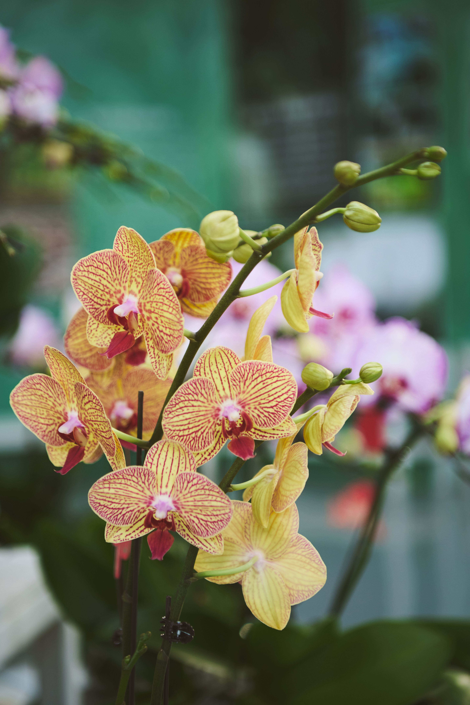

Orchid
Phalaenopsis
Bright indirect light
Every 1–2 weeks
40–70%
18–30°C
Orchid is a beautiful flowering houseplant. It needs bright indirect light and careful watering to grow well. Its elegant flowers can bring beauty and freshness to any room.
Care instructions
Light
Orchid grows best in bright indirect light. Avoid strong direct sunlight.
Water
Water the orchid when the roots and growing medium become dry. Avoid leaving the roots in standing water.
Humidity
Orchids prefer moderate to high humidity and good air circulation.
Temperature
Keep the plant in a warm room and protect it from cold drafts.
Care tips
- Do not overwater.
- Provide bright indirect light.
- Use a special orchid potting mix.
- Make sure the pot has good drainage.
- Keep water away from the center of the leaves.
Community Q&A
Have a question about Orchid? Share it with the community.